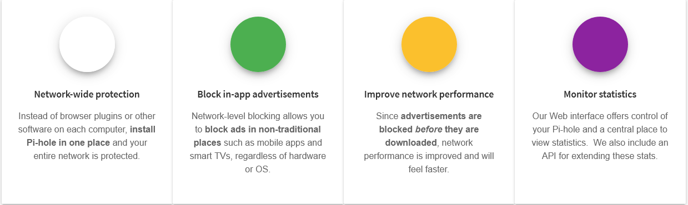

AdBlocking mit
Werbefreies Heimnetzwerk mit dem RaspberryPi
$ tree
contents
├── 1_uber_uns.txt
├── adtracking
│  ├── 2_tracking_pixel.txt
│  └── 3_real_time_bidding.txt
├── pi_hole
│  ├── 4_allgemein.txt
│  ├── 5_about_dns.txt
│  └── 5_tech_demo.txt
├── 6_fazit.txt
└── 7_quellen.txt
Wer sind wir?
AG Link
AG für kritische Informatik an der Uni Leipzig
- [Plenum] Mittwochs 19:00 Uhr
- [Web] https://ag-link.xyz
- [Mail] ag-link@riseup.net
- [Matrix] #ag-link:ag-link.xyz
🪠Cookies

Tracking Pixel
Tracking Pixel
Tracking Pixel
- 1x1 Pixel großes Bild im Code der Webseite (E-Mail).
- Registriert Nutzerverhalten
Klassisch ist dies ein einfaches HTML Tag:
Gesammelt werden:
- IP Adresse (Liefert Informationen zu eurem ISP)
- Browser (Chrome, Firefox, etc.)
- Geräte Typ (Mobile, Desktop, Tablet)
- Betriebssystem (iOS, Android, Windows, etc.)
- Bildschirmgröße
- Referrer (Von wo aus ihr auf die Seite gelangt seit)
Außerdem
- Messen von Verhalten und "conversions"
- Beavioural retargeting ermöglichen
- BetreiberInnen profitieren von Insights und Metriken
- Anbieter profitieren von Daten
Und was springt für uns dabei raus?
- * Personalisierte Werbeerfahrung.
- * Gezieltere Anzeigen führen häufiger zu Käufen.
- * Bessere generelle Nutzererfahrung durch Optimierung der Webseiten

Real Time Bidding (RTB)
Vokabular
- DSP: Demand Side Platform
- SSP: Supply Side Platform

Wichtige Organisationen
- Internet Advertising Bureau (IAB)
- OpenRTB
- Transparency and Consent Framework (TCF)
- Authorized Buyers Framework
Bid Request
- Request ID
- IP Adresse (im Falle von ABF nur die ersten 3 Bytes)
- Cookie IDs
- User-Agent (Identifiziert den Browser und das Gerät)
- Ort
- Zeitzone
- Systemsprache
- Informationen zur Konsumentengruppe
IAB Inhalts-taxonomie
- Herzkrankheiten
- Psychische Gesundheit
- Sexuelle Gesundheit
- Ansteckende Krankheiten
- uvm.
Google 'publisher verticals'
- Reproductive Health
- Substance Abuse
- Health Condition
- Politics
- Ethnis & Identity Groups
- uvm.
Auktion eines Werbeplatzes
- [0.00s] J. öffnet eine URL und der Browser beginnt den Inhalt der Webseite zu laden
- [0.04s] Die Webseite fragt an der Ad Exchange
DNS who?

Domain Name System
PIHole Unbound
Hostet euren eigenen rekursiven DNS-Server + mehr Privatsphäre + erhöter Schutz vor DNS-Spoofing/Hijacking Angriffen - Erstmalige Aufrufe neuer Adressen haben eine kurze VerzögerungFeatures
Die PiHole Blockliste
Quellen 2/2
- Update report into adtech real time bidding; ICO
- Selling Off Privacy at Auction; Lukasz Olejnik, Minh-Dung Tran, Claude Castelluccia
- To bid or not to bid? - Measuring the value of privacy in RTB; Lukasz Olejnik, Claude Castelluccia